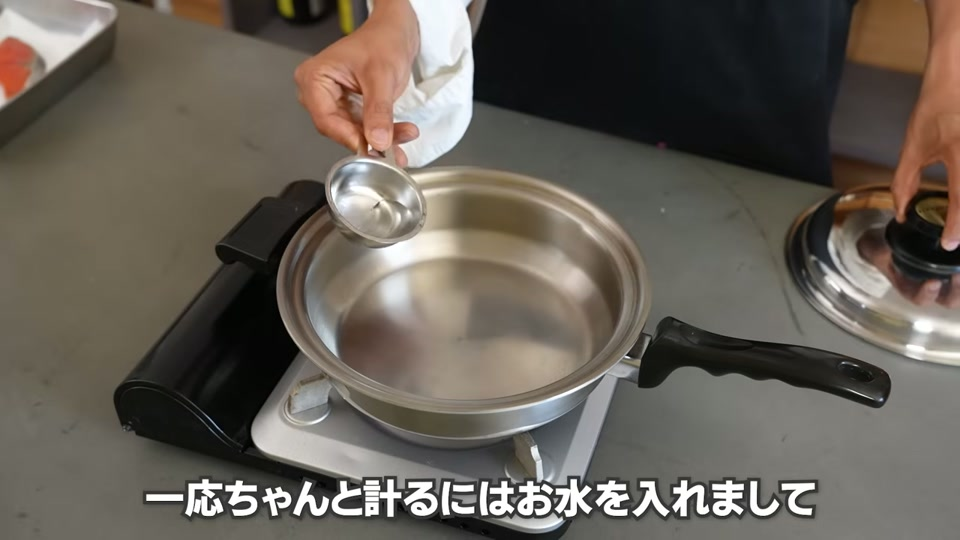
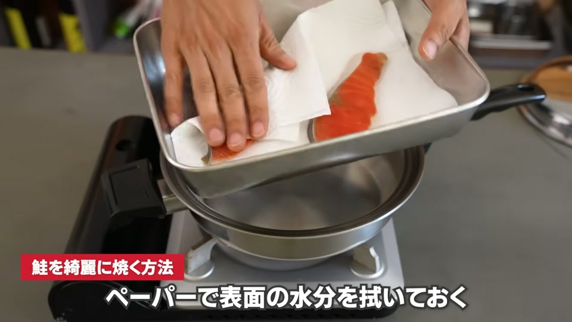
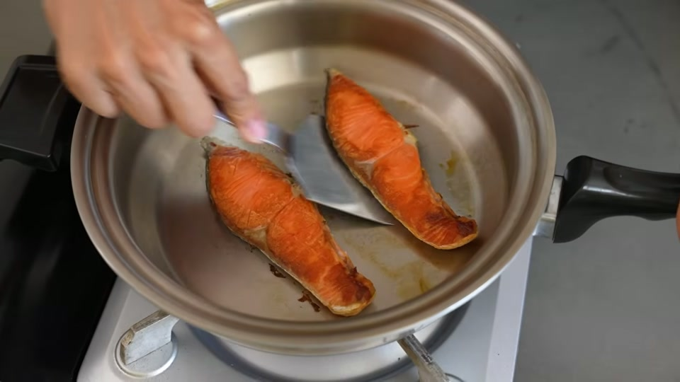
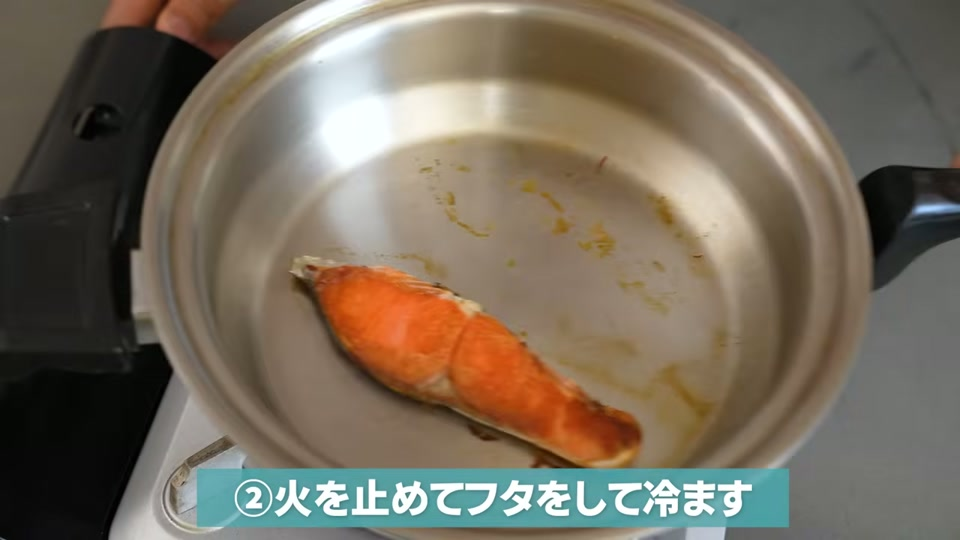
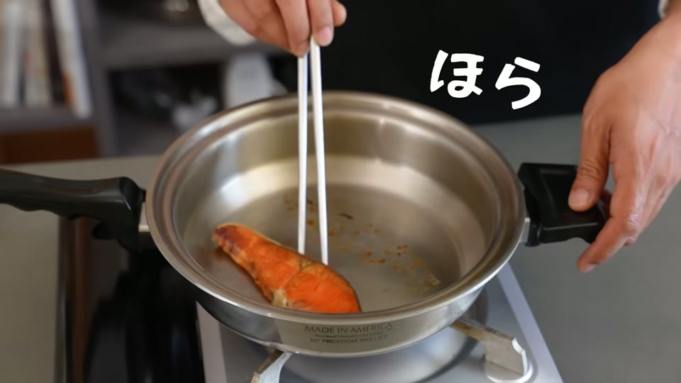
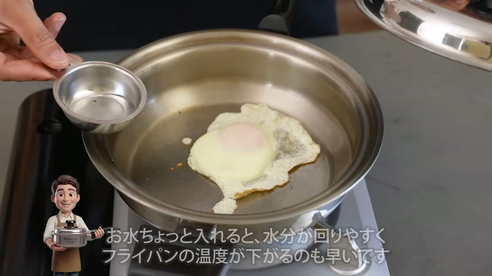
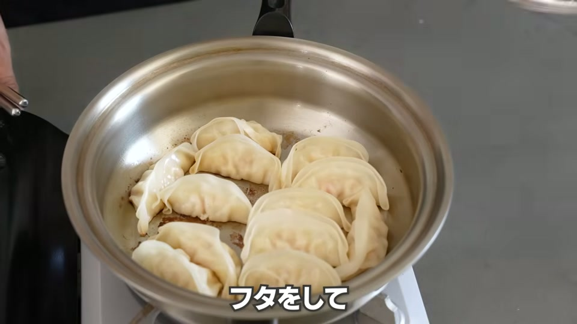

結論：ステンレスフライパンにくっついても焦る必要はありません！
ステンレスフライパンで調理していて、鮭や目玉焼き、餃子が鍋底に張り付き、ボロボロになって困った経験はありませんか？
結論から言うと、ステンレスフライパンに食材がくっついてしまっても「金属ヘラで力技で削ぎ剥がす」か「火を止めて蓋をし、蒸気を巡らせて待つ」という2つの対処法を知っていれば、失敗することはありません。
本記事では、食材が張り付く原因から調理前の予防策、くっついた時の具体的なリカバリー手順まで詳しく解説します。
なぜステンレスフライパンに食材がくっついてしまうのか？

ステンレスフライパンで食材が張り付いてしまう主な原因は以下の3つです。
- 予熱不足（フライパンの温度が低い）
- 鍋底に残った細かい汚れや凹凸
- 食材の表面に残っている水分
ステンレスの表面には目に見えない小さな穴（微細な孔）が存在します。フライパンの温度が十分でない状態で油や食材を入れると、加熱の過程で食材のタンパク質がこの穴に入り込み、焼きついて固まることで「くっつき」が発生します。
くっつきを防ぐ！調理前に実践すべき3つの予防策

調理に入る前のちょっとした工夫で、張り付きのトラブルは大半を防ぐことができます。
| 予防策 | 具体的な手順・ポイント |
|---|---|
| ① フライパンを綺麗に洗う | 前回調理した際の微細な汚れや凹凸が残っていると焦げ付きの原因になります。しっかり洗って鍋底を滑らかに保ちましょう。 |
| ② しっかり予熱する | 中火で全体を熱し、水を数滴落とした際に「玉のようになってコロコロと転がる状態」になるまで予熱します（すぐにジュッと蒸発するのは予熱不足）。 |
| ③ 食材の水分を拭き取る | 魚や肉などの表面についている水分はくっつきを引き起こします。焼く前にキッチンペーパーで水気をしっかり拭き取りましょう。 |
食材がくっついてしまった時の2つの対処法

万が一、予熱を行っても食材が鍋底に張り付いてしまった場合は、以下の2つの方法で綺麗に剥がすことができます。
対処法1：金属ヘラで削ぎ剥がす
フッ素樹脂加工（テフロンなど）のフライパンとは異なり、オールステンレスフライパンには剥がれてしまう表面コーティングがありません。
そのため、金属ヘラ（ターナー）を食材の下に差し込み、ゴリゴリと力強く削ぎ剥がすように動かしても問題ありません。
対処法2：火を止めて「蓋をして待つ」（おすすめ）
最も傷をつけず綺麗に仕上がるのが、蒸気の力を利用したリカバリー術です。
- 一旦、火を止める
- フライパンに蓋をする（水分が足りない場合は少量の水を回し入れる）
- しばらくそのまま放置して冷ます
火を消して蓋をすることで、鍋内部に水分（蒸気）が充満して循環します。この蒸気が鍋底と食材の隙間に入り込み、強固に張り付いていた部分を自然に浮かせてポロっと剥がれやすくしてくれます。
【料理別】食材が張り付いた時の実践リカバリー例

動画内で紹介されている具体的な料理別の対処手順です。
1. 鮭の塩焼き
- 状況: 裏返そうとしたが、皮や身が鍋底にくっついて動かない。
- 対処: 無理に箸で引っ張らず、火を止めて蓋をします。数分置くと内部の蒸気で身が綺麗に剥がれるようになります。
2. 目玉焼き
- 状況: 白身が固まり、ヘラを入れても底にくっついて離れない。
- 対処: 鍋肌から少量の水を差し入れ、すぐに蓋をして火を止めます。蒸気が回ると目玉焼きがフライパンの上で滑るように動きます。
3. 餃子
- 状況: 蒸し焼きが終わって蓋を開けたものの、皮が底に張り付いている。
- 対処: 火を止めて再び蓋をし、内部の水分を全体に巡らせます。少し時間を置くことで皮を破らず綺麗に取り出すことができます。
【実践アドバイス】ステンレスフライパンを快適に使うための注意点

ステンレスフライパンを扱う際、最も大切なのは「くっついた瞬間に焦って無理やり箸やトングで引っ張らないこと」です。
張り付いた直後に力任せに引き剥がそうとすると、食材の表面が破れて身崩れを起こしてしまいます。「くっついたら、まずは火を止めて蓋をする」というルールを意識するだけで、料理の仕上がりが見違えるほど良くなります。
また、調理後のお手入れにも注意が必要です。使い終わった直後の熱い状態のまま冷水をかけると、急激な温度変化で金属が変形してしまう恐れがあります。少し冷めてからぬるま湯を使ってしっかり洗浄するのが、フライパンを傷めずに長持ちさせるコツです。
よくある質問（FAQ）

Q1. ステンレスフライパンで金属ヘラを使っても傷つきませんか？
A. コーティング加工がされていないため、金属ヘラで強めに削ぐように剥がしても問題ありません。傷を気にせず安心してご使用いただけます。
Q2. 火を止めて蓋をするとなぜ剥がれやすくなるのですか？
A. 蓋を閉めることで鍋の中の水分が逃げずに蒸気として循環するためです。蒸気が食材と鍋底の隙間に入り込み、張り付きを自然と和らげてくれます。
Q3. 予熱が完了したかどうか確認する方法は？
A. 水滴を垂らした際に、ジュッと蒸発せずに水滴が球状になってコロコロと転がる状態になれば予熱完了のサインです。
動画で紹介されているアイテム・サービス

動画内で使用・紹介されているアイテムやサービスの一覧です。
- キッチンクラフト レギュラースキレット（動画で使用されている316Lステンレス製のスキレット）
- 大澤チャンネル オリジナル商品サイト（ステンレス菜箸や鍋磨き用ブラシなど）
- 安全な浄水器「Re」（銀イオン・界面活性剤不使用の浄水器）
- 国産置き型浄水器 beaq（Amazonで購入可能な置き型浄水器）
- ヘンケルス オールステンレス包丁（長持ちするおすすめの包丁）
- 酵素玄米炊飯器（発芽玄米・酵素玄米用の炊飯器）
まとめ：対処法を知っていればステンレスフライパンは怖くない！
ステンレスフライパンで食材がくっついてしまうのは、コツや対処法を知らないことが主な原因です。
調理前に「しっかり予熱する（水滴がコロコロ転がる状態）」ことを徹底し、万が一張り付いてしまったら「火を止めて蓋をして蒸気を巡らせる」というテクニックを使えば、失敗なく料理を楽しむことができます。
適切な知識を身につけて、ステンレスフライパンを長く快適に活用していきましょう！
運営者の一言コメント ステンレスフライパンはコツさえ掴めば一生モノとして活躍してくれる頼もしい道具です。私も使い始めの頃は目玉焼きを何度もボロボロにしてしまいましたが、「火を止めて蓋をして待つ」という対処法を知ってからは失敗がなくなりました！くっついても慌てず、ぜひ試してみてくださいね。（140文字）